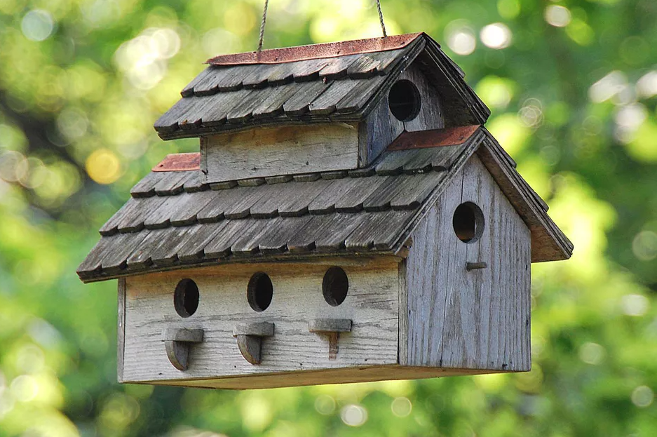
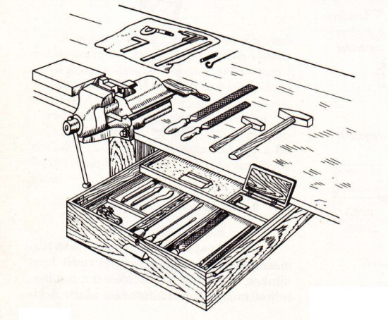
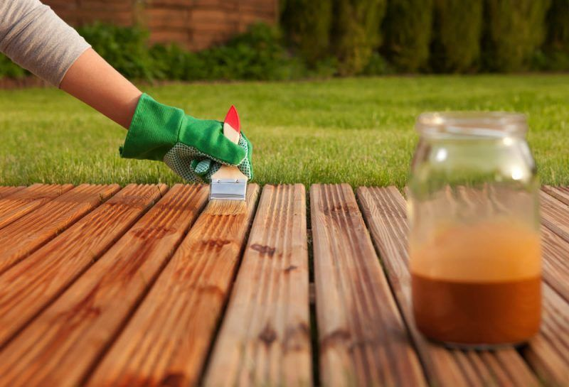

Beréti Zsófia
Madáretető készítése
Az őszi és a téli időszakban sem kell kizárnunk a külvilág eseményeit az életünkből. Az otthon melegéből figyelemmel kísérhetjük kertünk élővilágát.
Egy saját kezűleg készített madáretető a legegyszerűbb eszköz az énekes madarak kertünkbe csalogatására, emellett hangulatos színtérré változtathatjuk vele kertünket. Az ablakból jól látható helyre téve a gyerekek is megfigyelhetik a madarakat anélkül, hogy megzavarnák őket táplálkozásukban.
| Szükséges alapanyagok: |
| 1 db 25x25cm 10 mm vastag rétegelt lemez az etető aljához |
| 2 db 35x20cm 10 mm vastag rétegelt lemez a tetőlapokhoz |
| 2 db 25x6cm és 2db 23x6cm 10 mm vastag rétegelt lemez az oldalfalakhoz |
| 4 db 20cm hosszú 3x3cm léc a tető alátámasztásához |
| 2 db 32x8cm 10 mm vastag rétegelt lemez a tető elejéhez (homloklap) |
| 8 db 6 cm hosszú 10mm-es fa tipli a pihenő rudakhoz |
| szeg és vízálló faragasztó az etető összeállításához |
| kültéri vastag lazúr, vagy színtelen lakk az időjárásálló felületkezeléshez |
| erdőben gyűjtött vagy egyéb módon beszerzett fakéreg a tető különleges, rusztikus kialakításához |
| Szükséges szerszámok: |
| szúrófűrész az íves, ferde és a beugró részek kivágásához (tető homloklap) |
| fúrógép a beugró részek, és a pihenő rudak helyének kialakításához |
| kalapács |
| ecset |

A kép csak illusztráció az eredeti ötletet ide kattintva találja meg!
Csóka András
Fafaragás
A kezdőknek mindenképpen érdemes apróbb tárgyak faragásával kezdeni. Először késsel faragott apróbb dísztárgyak díszítésével lehet rájönni a fa szálirányára, megismerni tulajdonságait, kiismerni, a faragószerszám és fa viszonyát. Néhány apróbb ajándékozásra is alkalmas tárgy a legmegfelelőbb az első sikerélmények megszerzésére. Székelyföldi őseim egy-egy sulyok kifaragásával kedveskedtek az általuk szeretett nőnek. Aki ismeri a sulyok funkcióját (a patakon a ruhák kimosásánál van nagy szerepe), annak nem nehéz elképzelni, hogy a sulykok faragásának nemcsak díszítés volt a célja, hanem a mélyen faragott mintás sulyokkal sokkal jobban, hatékonyabban lehetett tisztítani a ruhákat. Azonban napjaink használati tárgyai is korlátlan díszítőfelületet kínálnak a téma iránt érdeklődőknek. Csak néhány ötlet: asztali névjegykártyatartó, papírvágó kés, tolltartó, öntapadós papírtartó, képkeret, tükörkeret, kis kopjafa, fatányér, polcok, tálasok, falitékák stb.

Tátrai Dominik
Fa kezelése
A teraszon, kertben mindenképpen, de még egy apró balkonon is elengedhetetlen a kültéri fafelületek megfelelő kezelése, legyen szó kerti bútorról, teraszburkolatról, korlátról, pergoláról, vagy bármilyen, fából készült kiegészítőről. Ápolás nélkül ugyanis a fafelületek idővel nem csak színüket vesztik, de repednek, korhadnak és jó eséllyel hamarabb tönkremennek, mint szeretnénk.
| Milyen hatások ellen kell a favédelem? |
| Nedvesség |
| Kiszáradás |
| Gombák |
| Rovarok |
| UV-sugárzás |
| Legfontosabb fafelület kezelési lehetőségek |
| Pácolás |
| Gombásodás gátlók, rovarölők |
| Viaszolás |
| Olajozás, olaj-viasz |
| Színtelen lakkok, lakklazúrok |
| Vékonylazúr |
| Vastaglazúr |
